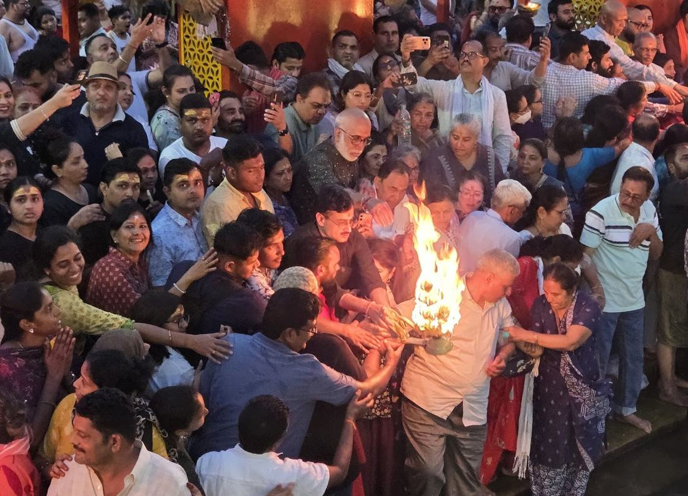

Jaankari
Ganga Aarti Ke Baare Mein

Ganga Aarti kya hai?
Ganga Aarti Maa Ganga ki pavitra pooja hai jo Har Ki Pauri par roz shaam ko hoti hai. Yeh Haridwar ki sabse purani aur vishesh aarti mani jati hai.

Haridwar ki Ganga Aarti ka mahatva
Yahan hone wali Ganga Aarti ko world record recognition bhi mil chuka hai. Desh-videsh se log is divya drishya ke darshan ke liye Haridwar aate hain.
Timing & Booking
Ganga Aarti roz shaam ko hoti hai. VIP darshan aur special pooja ke liye advance booking ki suvidha uplabdh hai — samay pehle se confirm kar lein.